OpenDeadlock
OpenDeadlockThe modern UI draws the toasts and the Shift hint itself
The modern UI draws both at the window's size in its own type and theme. More
What plays differently from the original Deadlock 2, by where in the game, newest first. The full changelog has the details, and the port's own bugs fixed.
The modern UI draws both at the window's size in its own type and theme. More
On Android that line is not shown; "Placing more: [Right-click] to stop" still is, once a building was placed with Shift. More
With missiontitles=1: each mission has a title of the port's own, written after its briefing and in its race's voice. More
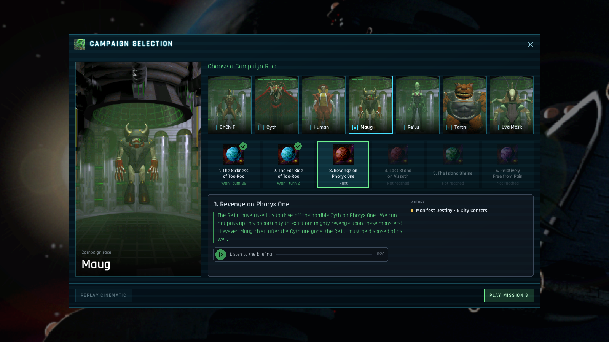

With uimotion=full: every control glows in and out under the pointer, sinks while the button is held on it and flashes when it is let go. More
With battlebars, each unit's bar is filled in its side's colour: blue the local player's units, cyan an ally's, orange-red an enemy's. More
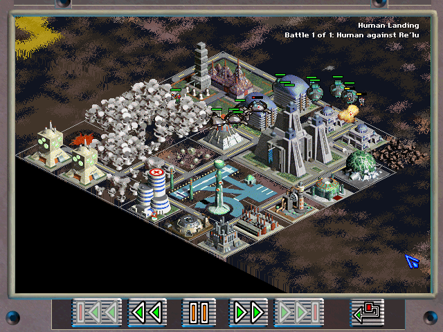
The desktop's first-start window, drawn at the screen's density: Choose folder... opens the system's folder picker. More
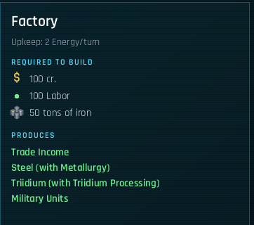

The picture is drawn by the platform over the view at the camera's zoom, hung from the pointer as the original hangs it. More

Both open a + out from it, on the same centre; the wheel, a pinch and + and - zoom from there as before. More
Before: zooming out of a colony past its whole picture arrived at the world map at 3x and eased out to 1x, the original's view. More
The gesture is first a scroll or a pinch, by what the fingers do first; a scroll zooms only if the spread then changes by 35%. More
A host sends the relay its release too, git describe, after the name in its HOST frame; the page names it for both. More
With the HD terrain, the flooded territory's low land near the sea lies under muddy water for the turn the event log tells of it. More


Waves come in to the shores of the seas and lakes, from about half a territory out, and wash up on the beach; the rivers' ripples run downstream. More
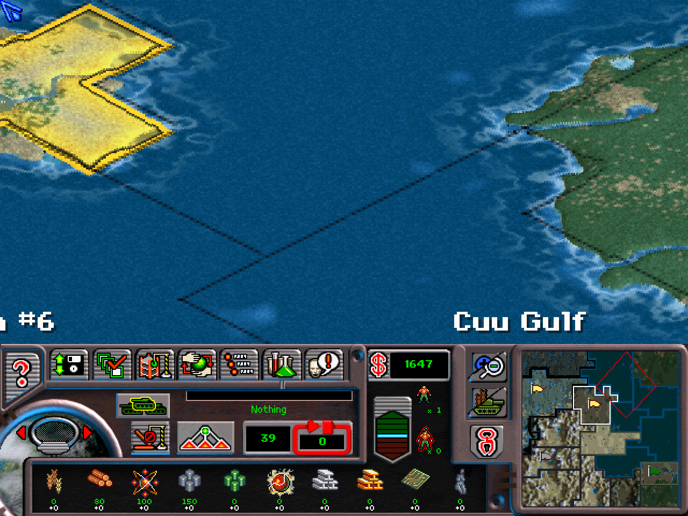

Unset, it is tactical, their draft B; uitheme=steel gives the steel look again. More
The film is 300 points square at the interface's scale, at the top right under the resource bar, the satellite view and End turn free beside it. More
The control clicked stays held down with a bar running along it while its steps go on. More
The system's keyboard comes up when a text box takes the keys and goes when none does; Back hides it until the focus moves on. More
The two are one zoom. More
The lobby opens the game on the network as it comes, with the rules at the game options' defaults and Random Events on. More
Online is the first connection, beside TCP/IP, IPX, Hotseat and Serial: the relay's public games only, each with its Join. More
net_relay is the public relay, opendeadlock-relay.fly.dev, unless set otherwise, so hosting gives a code and F2 takes one with no setup. More
With net_public=1 too: the game is listed at the relay, whose page names it with its code while it waits for players. More
Every unit but mines and missiles carries a small bar over its sprite, its strength left: green above half, yellow above a quarter, red below. More


The settlement is drawn as a picture twice the view's width and three times its height -- more of the land around the territory. More


With ui=modern, the scenario editor is drawn by the modern UI too; it was the original's 640x480 picture before. More
Each string is under a key in lang/opendeadlock.pot, and lang=LANG in opendeadlock.ini shows lang/LANG.po's translation. More
With ui=modern, Single Player opened its three choices in place under the item. More
With the HD terrain: wherever an owned territory meets land that is not its owner's, a line in the colour of the owner's race runs inside the realm. More


It zooms from the whole world to 3x. More


With ui=modern:. More
With ui=modern, a battle's replay is the modern UI's window: the battle as large as fits, which battle of how many and who fights over it. More
With ui=modern, the Black Market's other three pages are the modern UI's too, in the window of its Resources page: Information. More
With ui=modern, the two questions a drag on the map asks are sheets: Move Settlers and Trade. More
With ui=modern, Scenario Status is a drawer and so is Chat; a tile's mineral survey is a sheet with its resources as bars. More
With ui=modern, Research is the modern UI's own screen: the whole technology tree at once, each technology a card with its picture, name and state. More
With ui=modern, the game's whole-screen screens are no longer the bare classic picture: each is in a modern window over the whole output. More
With ui=modern, Taxes opens as a drawer at the right over the map: the credits a turn the colony makes and the treasury first. More
With ui=modern: Esc on the map opens the game menu, now one list with their keys. More
With ui=modern, the world map and the settlement are no longer the classic 640x480 picture: the map fills the window's width. More
With ui=modern, Host a game goes from Multiplayer straight to the lobby; before. More
With ui=modern, the first screens over the game itself are the modern UI's, drawn over the game's own picture: the game menu. More
With ui=modern, a network game is set up in the lobby too. More
With ui=modern: a new random scenario is set up on one screen, the lobby, in place of the game options' page, hotseat's "how many". More
With ui=modern: the game's message boxes over the modern screens are the modern UI's, with the box's own picture; Help is a sheet with its topics. More
The modern screens now carry the pictures the mockups have, read from the game's own archives: the intro's art as each screen's backdrop. More
With ui=modern the front end is drawn again at the window's own size, after the modern-ui mockups: real type. More
The port builds for Android as an APK: python3 tools/apk.py --install --push-game /path/to/the/game builds it. More
With net_relay=host: port set by every player: hosting also registers the game at a relay and gets a code of six characters. More
The fog below now shows without a setting: the user's decision. More
The port builds and runs natively on Linux: python3 tools/build.py --platform sdl --arch linux on Linux, with the system's GCC and SDL3. More
The far territories dense, the player's own and their neighbours clear. More
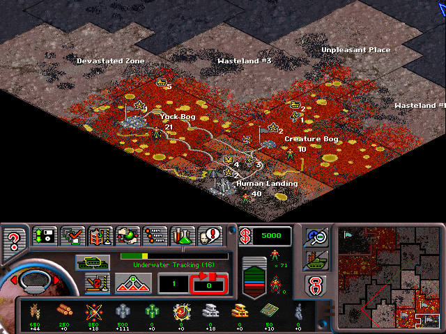

The key under Esc drops a console down over the top half of the window: the lines of game.log, error.log and platform.log as they are written. More
With terrain=hd only: a point below the land around it is darker by how far below it lies, at most three shades. More

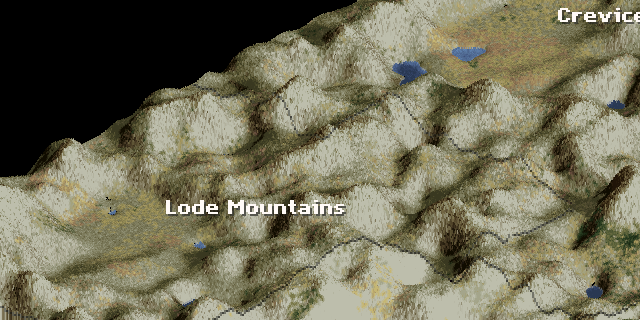
With terrain=hd only: the land casts shadows away from the sun; each land terrain's mean shade is the original's, which brings back the snow. More

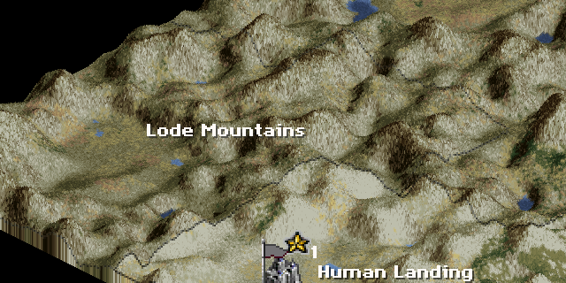
Before: the 3D world map draws each height point as one vertical span of one colour, at 640x480: mountains are stretched pixels, steep slopes streaks. More


The network screen's Modem service, which the port never had, is Hotseat. More

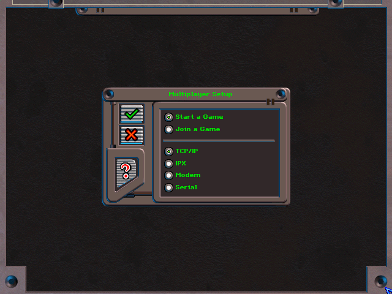
A line key.<from>=<to> in opendeadlock.ini makes the key <from> reach the game as <to>, down and up. More
Network play was IPv4 only: addresses were 32-bit numbers from the socket layer to the session list. More
Alt+Enter, or Cmd+F on macOS, switches between the window and the whole display while playing. More
The window asks for the display's full pixel density. More
It shows five lines, and a unit destroyed by another says by what: "Turbo Wing Fighter destroyed by SAM Trooper". More

The lobby keeps the last 100 lines, and the wheel over the Chat card goes back through them, a thin bar at its right saying where; scrolled back. More
The lobby comes with the game's setup as in a single-player random game: the victory condition and its cities, shrines or turns. More
GCC's libraries and SDL3 are linked into the program, and the zip holds opendeadlock alone: one question, the first time. More
While one of those panels is open its icon on the rail stays lit, and a click on it again closes the panel, as its x does. More
In the modern UI: beside the battle each side's units as cards, the attackers' left and the defender's right, grouped by player under its race. More

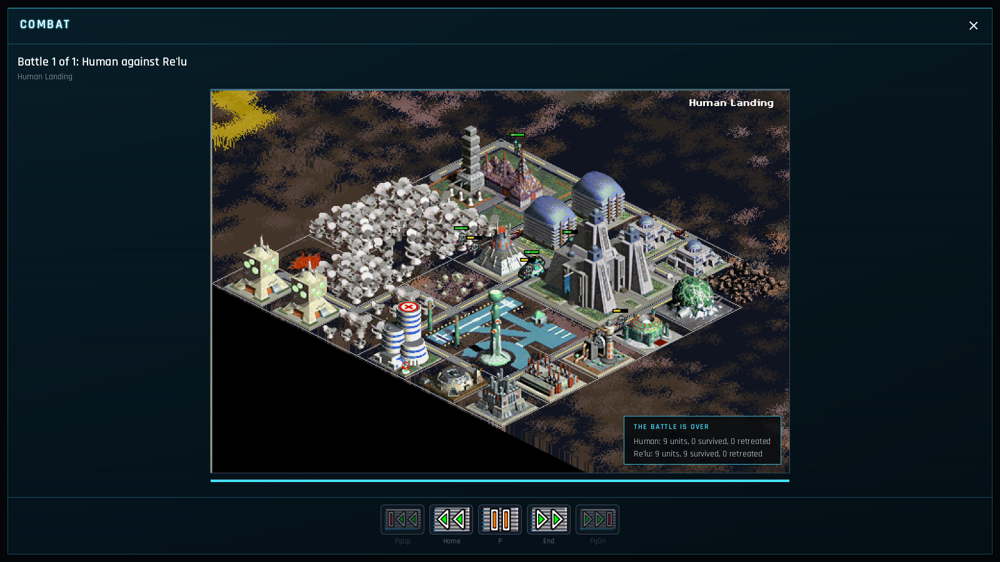
Every queued row has an x at its right, in the panel and in the drawer; a click takes that unit out of the queue. More
The backdrop lives, slowly. More
With battlebars, a veteran's bar carries the game's own rank badge at its left, a blue gem, and an elite's an orange gem. More


Those choices are their name alone, centred in the row; Player and Open keep their line, which says something the name does not. More

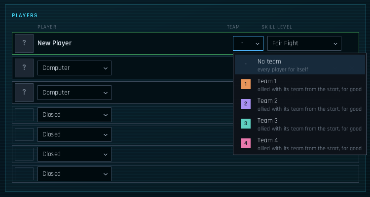
The version is a link; clicked, a box like the update box, "OpenDeadlock's changes", lists every version the update manifest holds, newest first. More
Once a day, from the main menu, the game asks the web page for the newest release's manifest and checks its signature. More
The same window on Windows, macOS, Linux and Android. More
It shows the build's own version, as game.log and the network name it: "OpenDeadlock v0.2.1" for a release. More
On an official release: the box asks "Report this crash to the developers?" -- Report sends a small report to the relay's /crash. More
net_public is on unless set: a game hosted through the relay is in its public list. More
Once the fault is logged, the game writes the --report zip in the game's folder and shows a box: "Sorry, OpenDeadlock has crashed". More
Each one the player cannot have now is listed in red, the colour of a cost the player lacks in the lines beside it. More
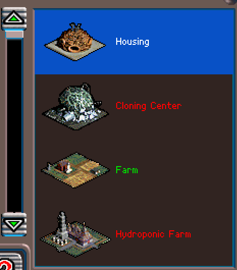
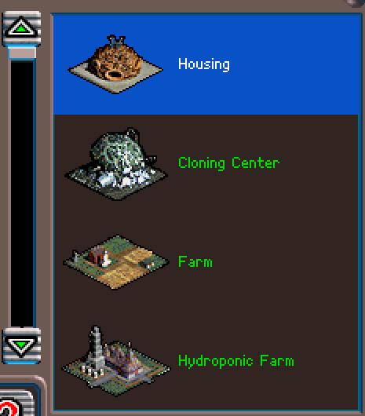
Each task's card has a - at its left and a + at its right; Alt moves all of them, as with a drag. More
GALI-19. More
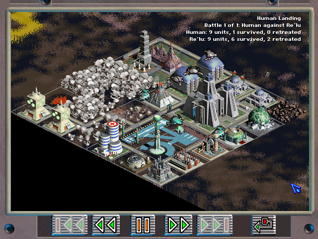

The modern main menu's footer has a Discord link after High Scores, Credits and Keys: Discord's logo and its name. More
It is drawn see-through, 190 of 255 of it over the screen: on the zoomed view by the platform, also in screenshots. More

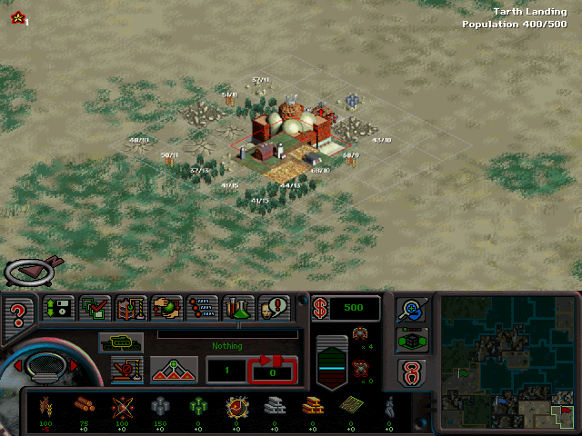
Under the text, two bulleted lists, Strengths in green and Weaknesses in red, read from the race ability table the game plays with: production. More
Every building the game lists, read from its data, as many rows as the drawer's height has room for, the rest by a slider. More
Only Add and Delete, each half the width; the modern UI has no way to turn the circular queue on or off. More
Before: with the modern UI, while a building's panel or New Construction was open beside a colony, the colony behind it stood still: no animations. More
Before: a click on the modern UI whose work took over a third of a second showed a "Working..." note low in the window. More
When no game is found by the other ways, a setup_deadlock*.exe in the current folder or the program's own is unpacked into the program's data/ as. More
The first start's question has a third button, Choose installer, whose file dialog takes setup_deadlock_ii_shrine_wars_*.exe. More
With syscursor the system's pointer is always shown, and it is the game's own cursor: its shape and animation frame. More
It opens where it was, at the size it had, on the whole display or maximized if it was. More
They run as for any other program; a turn-based game has no reason to keep the screen awake. More
With fastsetup=1: no pause; the picks and their order are the same. More
With muteinactive=1: from the moment the window goes to the background its sound is silent, and it comes back when the window is in front again. More
A button that has a key now names it after its tip, in white beside the tip's yellow: "End Turn [Enter]", "Taxes [F9]", "View Armies [Shift+S]". More
Every flying warrior casts a shadow -- its sprite's frame squashed to half its height, the ground darkened to a quarter. More


Every few points a moving ship or AAV covers, a ring is left on the water where it was. More

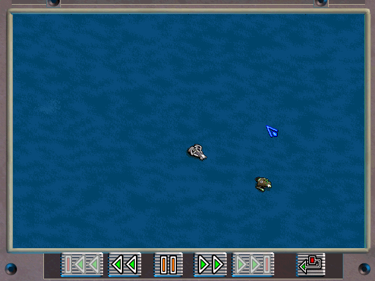
OpenDeadlock's icon: on Windows and Linux the emblem, 256x256, on the window and taskbar; on a Mac the rounded tile, 512x512. More
With touch the right button was only a finger held still half a second. More
The first time the main menu comes up and ui has never been set, a screen asks which interface to play with: Modern. More
The program can now live in a folder of its own, opendeadlock beside data/, saves/ and scenarios/. More
With replaymusic=keep: entering a replay pauses the world's track where it is and starts a battle track; Previous. More
planet terrain [FILE] in the console writes the whole planet as Shift+PrintScreen does but without the territories' borders and with every. More
DEADLOCK --host "Friday game" msaves/GAME1.MSV loads that game where Load Saved Game would and waits for its players, as after a load by hand. More
When a turn of yours begins while the game's window is in the background, the Dock's icon bounces once or the taskbar's button lights up. More
While a game is on the title is Deadlock II - turn 12, and Deadlock II again on the menus. More
Releases now have Linux builds for x86_64 and arm64, made by tools/linux_release.py in containers. More
Before: quitting a game in progress -- the game menu's Quit, the quit key, closing the window, or quitting while waiting for the other players. More
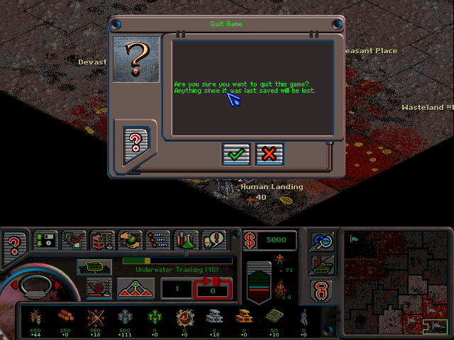
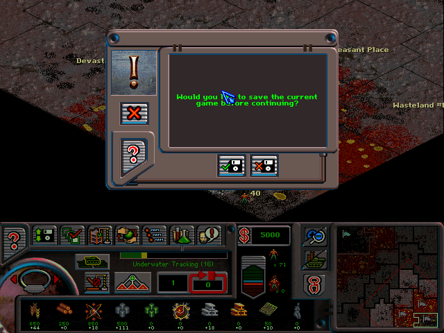
On the site, where an upgrade arrow would be, the same green-framed plate as upgradeturns with the panel's own figure. More


Each is on until set; KEY=0 brings back the original's. More
The outline below now shows without a setting: the user's decision. More
The badge below now shows without a setting: the user's decision. More
With upgradeturns=1: beside the green arrow, on a small dark plate framed in green, the turns the upgrade has left, the panel's own figure. More
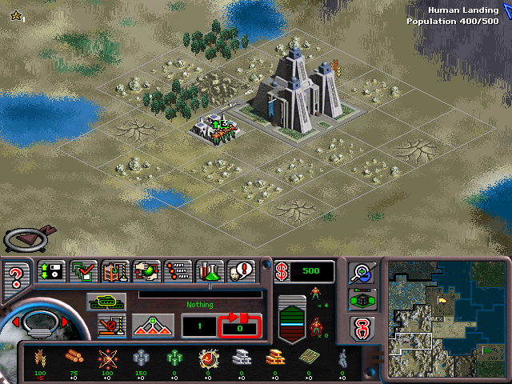
BeforeAfterWith droptarget=1: from the moment a drag starts -- units from the unit table, or a group from an army icon on the map. More
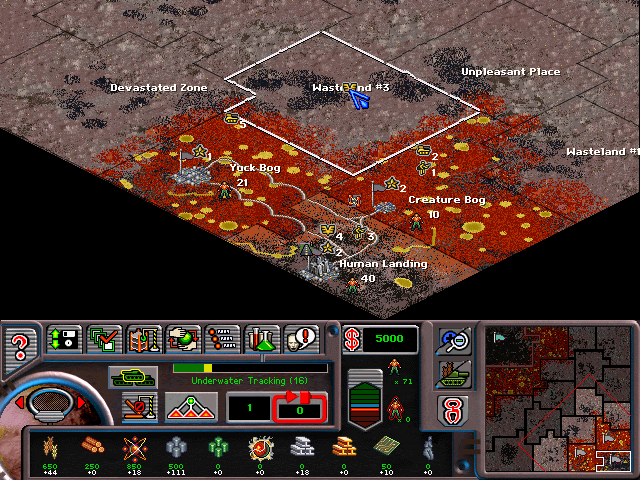

The console's set KEY VALUE changes one for the session, reset KEY gives it back to the file's. More
8 ms, about 98 a second, unless smoothcursor=0. More
Before: when the game refused something -- a building that cannot be set down there, a unit you cannot afford. More
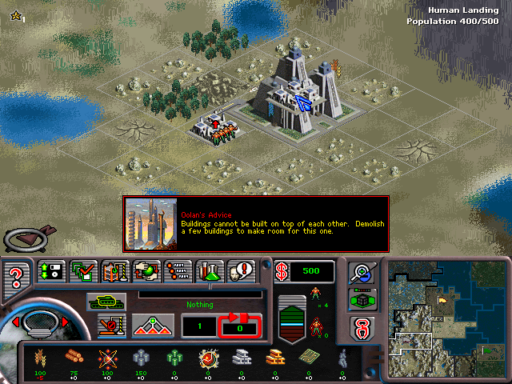
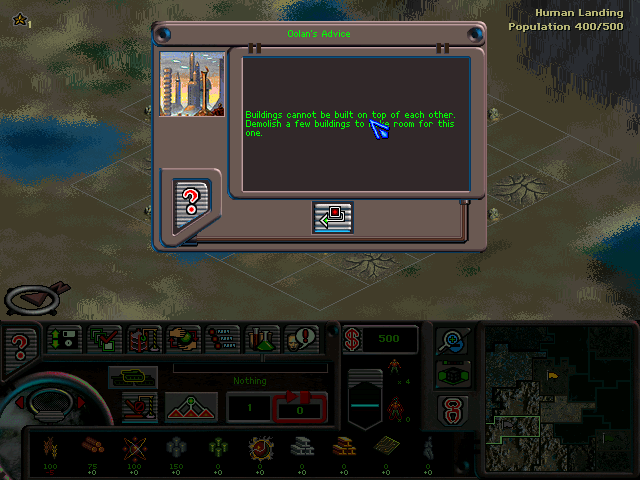
The joiner keeps both and tries both, the one the answer came from first when it came from the address typed, else the named one first, as before. More
Each connection has a queue; a frame goes into it whole and is sent as far as the peer takes it, the rest at the next call the game makes. More
The host sends its reason after the WELCOME's level and date and logs it; the joiner shows "This game is full". More
With richtooltips=1: over one of your own territories a second line follows, "Pop 480/600, morale 41, food 120", and ". More
net_port is checkedA failed host shows a box, then the waiting box as before, whose Abort leaves. More
The performance counter, the process id and the time of day to the microsecond go in too, mixed. More
On Windows the host's sockets set SO_EXCLUSIVEADDRUSE instead, and the second host fails to bind. macOS keeps SO_REUSEADDR. More
The name is looked up on a thread of its own, once and then every 30 s; an address that is not a name is taken at once, with no lookup. More
With seed set: the world-size screen has an F2: Seed button, where a number can be typed; seed=12345 has it typed already. More
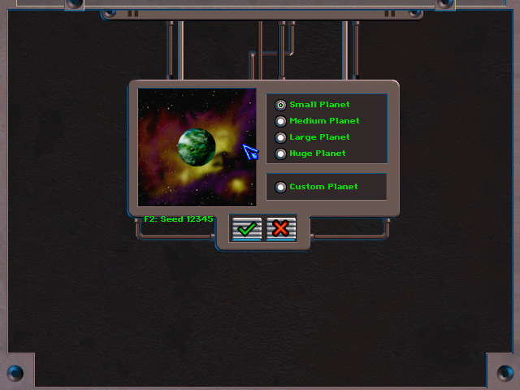

With unitbadges=1: each of your own units gets a health bar along the foot of its cell. More

With incomedetail=1: a tooltip on the credits says "Treasury 1200, next turn +312", then "Taxes +400, trade +12, upkeep -100", and that purchases. More

When the current folder has no DEADTEXT.CAM, the port moves to DL2_GAMEDIR, else the program's own folder. More
With net_upnp=1: when a session is created, the game asks the router to forward the port, TCP and UDP, by NAT-PMP or else UPnP IGD. More
With chatlog=1: typed lines, your own included, and the computer players' spoken remarks enter the event log, on its second row, as "You. More


With goalprogress=1: each such line ends with the player's own figures: a turn limit with the turn it is now (""). More
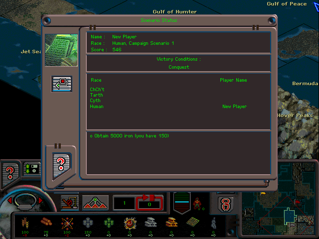
Beforewith `goalprogress=1`With scoredetail=1: the pointer on the score shows a tooltip with its parts, as the game added them up at the start of the turn. More
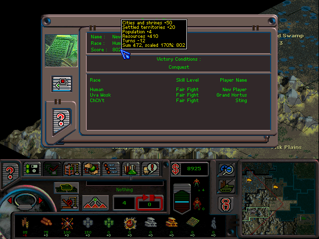
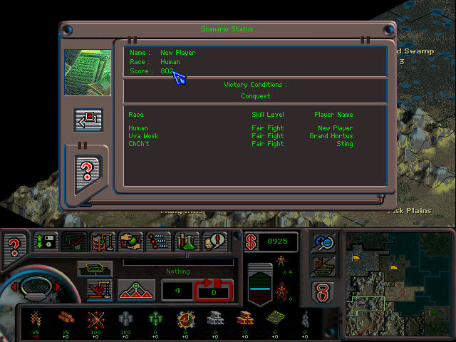
With armysummary=1: the unit table's title gives, after the territory's name. More
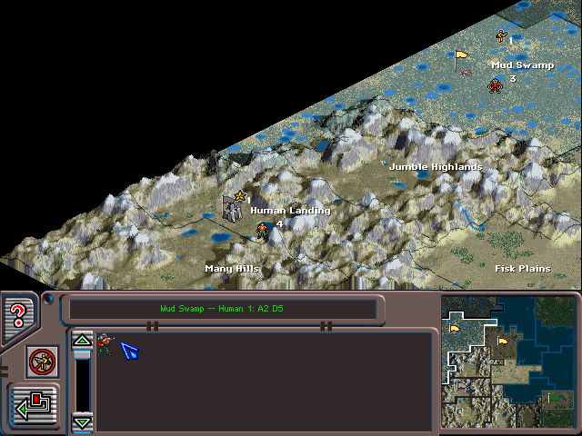
Beforewith `armysummary=1`With showreach=1: from the moment a drag starts -- units from the unit table, or a group from an army icon on the map. More
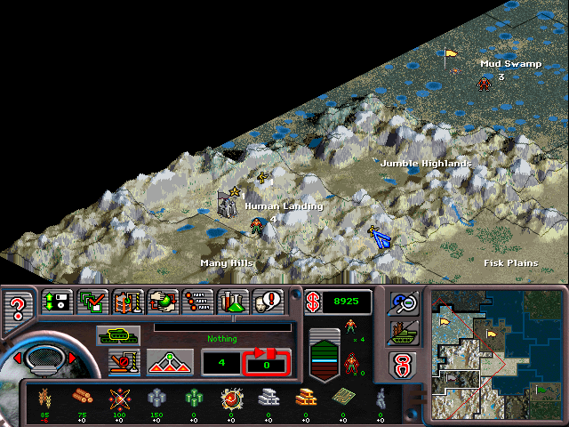

With savename=last: it offers the name the game was last saved under through that screen, or loaded from through the load screen. More

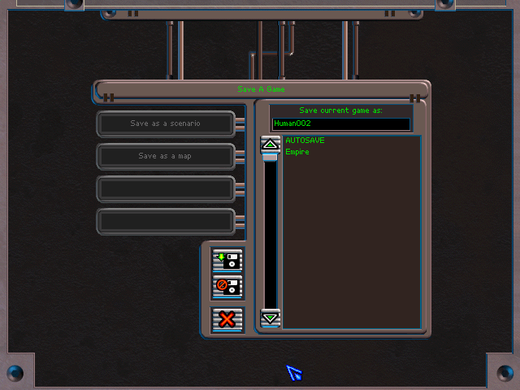
With tooltipdelay=ms: that many milliseconds, 0 to 10000; unset, or not a number, the original's second. More
With placementyield=1: while a building that produces from its tiles is in hand on the settlement view. More
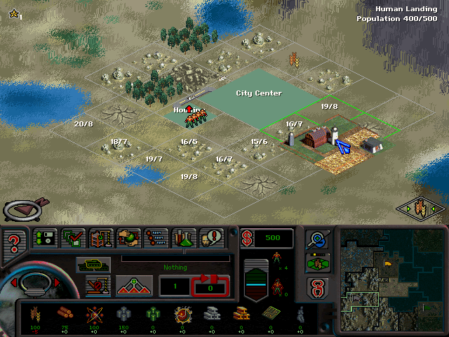
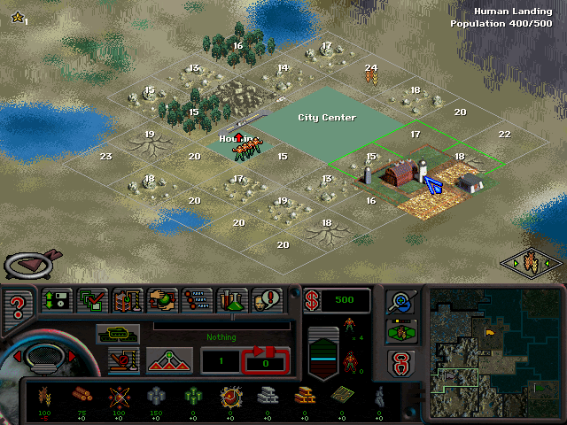
DEADLOCK --join ADDRESS goes by itself to New/Join Multi-player Game, Join a Game over TCP/IP. More
A single-player save named on the command line, the first argument not starting with -, is loaded when the main menu comes up. More
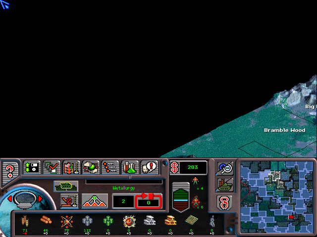

With filter=pixelart: SDL 3.4's pixel-art sampling, sharp and evenly wide pixels at any size; a renderer that refuses it keeps nearest. More
With vsync=1: each picture is shown at the display's refresh, no tearing; the game's thread waits for it, up to a frame. More
With pauseinactive=1: from the moment the window goes to the background until it is in front again the clock the game reads stands still. More
On macOS any other key with Cmd is swallowed, down and up, and its repeats too if Cmd is let go first; Shift, Ctrl, Alt and Caps Lock themselves pass. More
opendeadlock.ini: lines it ignores are named in platform.log, and a comment may follow a valueEach such line writes "settings: opendeadlock.ini line N: unknown key "filtr", ignored" to platform.log. More
opendeadlock.ini listing every settingWith no opendeadlock.ini in the game's folder, the first run writes one with all 19 keys, each as a comment under its description. More
Off by default. More
The original's 32x32 icon. More
screenshots/ folder, with a confirmationscreenshots/deadlock2_<date>_<time>.png, about 180 KB on the main menu, and for two seconds the window's title reads "Deadlock II - screenshot. More
The clipboard's text goes in at the caret, replacing the selection, in the host's address prompt, save names, the player name, chat and the rest. More
Off by default: a changed screen, so the game plays as the original unless it is turned on. More

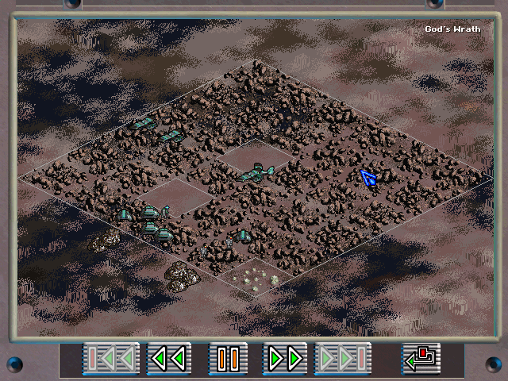
A session hosted by a build of other game code was listed like any other, and joining it failed with "hosted by a different version of OpenDeadlock". More
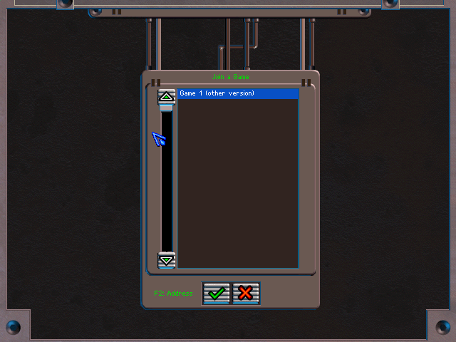
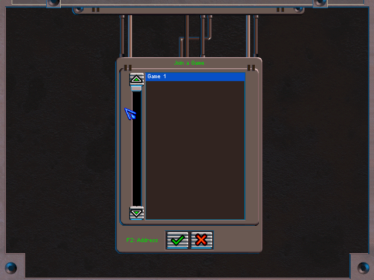
Twice a turn each joining game sends the host seven checksums of its state; when they differ from the host's. More
--report bundles them for a bug reportA report of a crash or odd play could not say which build it came from, and the files to attach were spread over the game folder. More
The main panel shows a colony's morale only as a trend arrow, so a player whose colony drifted toward riots could not tell why. More
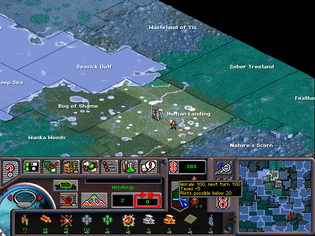
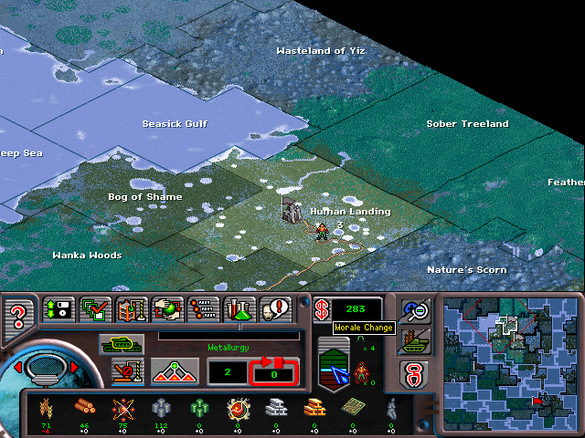
A computer player answers a pact proposal from you once a turn: every later proposal that turn is refused without being looked at. More
 beforeafter
beforeafter#34 made each wheel step an Up or Down key, which a list takes as a selection key: on the load screen. More
Enter or End Turn ends the turn at once. More
Join a Game looked for hosts with one broadcast to 255.255.255.255, which leaves the computer by one interface only, so a host on a second network. More
The game never handled the wheel, and the port dropped its events. More
The game's loops ask for messages without end, so the port used a whole core on any screen, a laptop's fan and battery noticing. More
The port's screenshot key was F12 whatever the modifiers, taken before the game saw it. More
Every fix of the original's bugs changes how the game plays out, and the network game runs the same simulation on every machine. More
replayspeed=N runs N of the replay's ticks on each tick of the screen's timer, so a replay plays N times as fast. More
loadsort=date lists the load screen's files newest first; unset, by name as before. More
autosaves=N keeps N single-player autosaves: before each one, saves\AUTOSAVE.SAV moves to AUTOSAVE1.SAV, that to AUTOSAVE2.SAV and so on. More
voice_volume=0..100 scales the sound of the game's scenes, which the Effects and Music sliders never touched. More
grabmouse=1 confines the pointer to the window while it is in front, so on the whole display the edges scroll the map and the pointer does not run. More
A pointer left on the screen's edge kept scrolling the map. More
filter=linear smooths the picture as it is scaled to the window; filter=nearest, the default, keeps the sharp pixels the port has always drawn. More
With skipintro=1 the game starts at the main menu: no opening movies, no version and copyright screens, no seven-second trademark notice. More


opendeadlock.iniThe port's options, until now environment variables only, can go in opendeadlock.ini in the game's folder. More
F12 saves the screen as shot_NN.bmp in the game's folder and notes it in game.log. More
With intscale=1 the 640x480 screen is scaled by whole multiples only, so every pixel is the same size, with a wider black border. More
Without scale, the window was always 1280x960, taller than a laptop's screen. More
Two logs next to the game's own DEBUG.TXT: game.log, each session's timeline; error.log, faults, quits and message boxes. More
While a building is in hand over the settlement view, a line under the view reads "Hold [Shift] while placing to build more". More
A unit with a negative cell is behind or beside every tile, so it is drawn before them all, in the order of its depth among such units. More

A row is the whole name without its last extension, so every button reaches that file; names starting with a dot are left out. More


With the modern UI and campaignmissions=1:. More
With campaignmissions=1: every mission won is written at once to campaign\progress.txt. More
A loaded transport cannot take the mission, and one loaded after taking it lays no mines until it is empty again. More
In three layers: a message of any length but the game's 0x5c bytes is dropped; a message is taken only from who may send it. More
It is also shown, titled "Transfer failed" as the other refusals of a move: a toast or the original's box. More
A second line follows, "Moving 100 colonists costs 25 credits; you have 10." -- in the toast and in the original's box alike. More
Each list of saved games ends with a row "" when the kind's Backup.bak is a saved game; it shows its race, turn and date like any row, loads. More
 BeforeAfter
BeforeAfterIn that case the event reads "Shipments of Y to X have stopped: the route costs N credits a unit, and the treasury holds M. More
One question per order -- a drag of a map army icon, a drop from the unit table, the selected army's move. More
With a track playing, closing the briefing pauses and resumes it where it was, which stops every other sound as before; without one, as before. More
The session is named as typed, cut to 31 characters, "Game 1" when the field was left empty. More


The file layer notes a short read on the file, and DoLoadGameData and LoadSavedWorldMap then say the save is corrupt, as for a failed read. More
A value out of range makes the save "corrupt", as a failed read does. More
0x150 bytes, as DoLoadGameData's since #295; the message is the same. More
The destination catches the plague from such a move only when it has none and none is filed for it, the test the plague's own spread makes. More
The +2 counts in the range tests of the target searches and of ShootTarget, so such ships fire at targets up to it. More
The four missile searches skip allies and mines, as the ordinary target search does. More
The cell steps inwards while the coordinate is below 1, the mirror of the loops from 26, and such units walk back off the field as the others do. More
A flying unit heads for the field's edge on the side it came from and leaves there, as defenders' aircraft do. More
NetOfferSale, the receiving end of a trade offer, checks the two territory numbers but takes the two players from their owners. More
Both stop at the disbanding. More
The force's enemy is the shrine's owner, as AssignAttackTaskForces gives its forces, and it attacks the shrine. More
The transport asks for nothing; the AI researches the Dreadnought for its own reasons only. More
``, the owner's bit, so militia counts its owner's Command Corps in the estimate. More
role == sea || role == AAV, as the battle code tests it; such fleets count a little stronger in the AI's estimates. More
The wait also ends when the receiver's slot is empty, the game is no longer a network game, the network game was aborted. More
The host drops a message whose player is not 0..6, the offer state takes only players 0..6. More
A joiner turns the host's leaving into the host's surrender, as the host does for a joiner: the game's "Opponent Surrenders" box shows. More

A host that cannot send the file sends the game's abort; the joiners' wait ends on that abort, on a quit, or when the network game is over. More
The loops give up when the game is no longer a network game, the network game was aborted, or the game or the program is quitting. More
On the army orders screen the title reads "Name" while the army has a destination it has not reached; for a group, "Group of Units". More
It ends with what is short, e.g. More
An Oolan's Advice box says "A Colonizer needs more than 100 colonists in this territory: building one takes 100 of them. More
A battle that reached round 750 retreated every attacker, the killed ones and exploded warheads too. More
Every player writes msaves\AUTOSAVE.MSV and its Backup.bak, at the same two points of the turn as the host. More
In a network game on the map or settlement screen: Ctrl+1 insult, Ctrl+2 threat, Ctrl+3 brag, Ctrl+4 complaint. More
The new key, on the world or settlement screen, writes screenshots/planet_<date and time>.png, the title bar saying so. More
One advisor box after the drop says how many of the player's units cannot reach the territory and why, in StageTo's own terms. More
Each line says what there is, the figures the affordability test compared: the treasury for the credits (""). More

The message adds the file and the reason -- "the folder is missing", "no permission to write there", "the disk is write-protected". More


It opens on the race selected when it was last closed, while that race is still in the game and it is the same game; otherwise on the first. More
 Beforeafter: the ChCh't
Beforeafter: the ChCh'tEsc closes the orders panel as its Cancel does, applying nothing, and with no panel open closes the unit table as its Done does. More
On the settlement view the tiles the building would take are outlined under the pointer -- green where it can be built. More


Esc, or a right click anywhere, puts the building back -- nothing is built or paid -- and the interface works at once. More
% in the player's name no longer garbles it or risks a crash on loadThe name is copied as text. More
These lines named no place: a unit disbanded for upkeep, a Veteran or Elite promotion, a unit's repairs done. More

"Your silicon-based opponents are considering their strategies" showed nothing while a long turn ran, so the game could look hung. More
"Demolishing this %s will give you back half the resources" gave no amounts. More

Moving colonists to a full territory said "Either you need to build more Housing or you have reached the territory's population limit" with no way to. More
On the main menu, Shift+F9 with no autosave to load did nothing, so the key looked broken. More
On the trade screen and, after picking Buy or Sell, on the Black Market the number field needed a click before typing. More
In the battle replay only Esc worked from the keyboard. More
These lists got keys only once clicked: when a screen opens the focus is on its first item, usually the background. More
No key left the Black Market: Done had none, and Esc on the Resources tab only sets the amount back to 0. More
On the building panel, event log, Colony Assistant, Scenario Status, tech details, the Continue text screen and High Scores Esc did nothing. More
The game's menu data gives the main menu's Load Game the key 0x0C without the Ctrl bit. More
On the save screen the Delete button has the key Delete, and a menu looked for a button with a key before offering the key to the item with the focus. More
Home and End only scrolled a list; the selection stayed where it was, so on the load screen Home showed the top save and Enter loaded the one chosen. More
Non-aggression and military pacts exclude each other, so signing one clears the other first. More
The event log holds 50 events; when it is full a new event takes the place of the least important one of no higher priority. More
- and _The save screen's name field took only letters and digits. More
On the unit list, Select queues one unit and the list comes back for the next. More
Tab steps through every territory the player owns; Ctrl+Tab, on the world or settlement screen. More
When a turn sorts out a territory, a transport deleted with its cargo right behind it in the territory's list made the loop step from the freed cargo. More
In scenario 36, holding the winning shrines gives the player a new goal, to destroy everything. More
Stepping through a turn's battles, "Next battle" also stops at a battle the player only has units in without being attacker or defender. More
The game runs and saves 25 random events at a time, but filed new ones in the first free of 50 slots. More
An ion storm turns Orbital Surveillance off for its turn. More
The shipments of a turn are reported in the event log at the start of the next. More
A right-click on the unit table selects the unit under it and opens its orders. More
Queueing a unit pays for it when the treasury and the territory look able to; if gathering the materials then fell short. More
When the AI sends an army that belongs to no task force somewhere only a ship can take it, StageTo looked for, or linked a new transport force to. More
A unit's attack and defence each take a percentage from its race's row for the unit's kind. More
When a network game is loaded, every player's things are given to the slot the race now has. More
The network handlers took territory numbers from the other machine and indexed the territory table with them unchecked. More
Disbanding every unit of the table disbanded the transport, which takes its cargo with it, and then went on to the cargo's rows: emptied records. More
The Join a Game screen says "F2: Address" under its list. More


A double click on an event in the event log closes the log and goes to the territory its text names. More
Holding Shift while dropping a building keeps it in hand for the next site, as long as the player can pay for another. More
Tab and Shift+Tab, the next and previous territory on the world and settlement screens, do the same on the Colony Assistant and the unit table. More
Ctrl+A on the unit table selects all the player's units listed there, also the rows scrolled out of sight. More
The label under the research bar on the main interface reads "Underwater Tracking". More


The load screen has the save screen's delete button at the lower left, with the same question; for saved games only, not custom scenarios or maps. More
On the load screen the empty lower left of the panel shows the selected save's race, turn and date, and the labels follow the selection. More
On the main menu, Shift+F9 loads the last single-player autosave and goes straight into the game; no new artwork. More
Shift+F9 on the world or settlement screen loads the quick save with no dialog: the load screen's own load, without the screen. More
Shift+F5 on the world or settlement screen saves the game to saves\QUICK.SAV with no dialog, overwriting the last quick save. More
When a land unit boards a ship of a computer player's task force that has no use for it, the unit is disbanded on the spot. More
A Skirineen scandal lowers the morale of the territory it strikes; unlike its spread to the owner's other territories, it did not stop at zero. More
In scenarios where new races arrive during play, an arrival due when seven players were already in the game was set up as an eighth. More
A flood with no territory of its own starts at a random territory and takes the first that touches water, wrapping round; it stopped one short. More
An animated scene's timer stopped when it reached the frame before the last, a test a scene of a single frame steps over: its timer ran on forever. More
In a network game the host checks every materials sale; when it refused one it still passed the message on to the other players' machines. More
Loading a saved game over the network renumbers the world to the new player slots. More
In the City Center game the victory check compared each player with the most cities among the players before them. More
When a player secretly ends a pact, the turn's settling tells the victim and the other computer players. More
Each turn an attack force makes sure an air attack force and a sea siege force exist for its target. More
To ferry an army the computer looks through its task force's transport groups for one on the same continent with room. More
To raise an army's experience the computer checks the training output of the training centre's territory and, while it is short. More
When a land unit boards a computer player's ship of another task force, the ship either takes it into its task force or disbands it. More
Rating a sea territory, the computer adds 100 for each neighbouring land territory it has scouted that has a building of class 7. More
When a computer player's defence building could be replaced by a better one but it lacks the technology, it queues that research. More
On its way to a technology of a higher level than technology 14 the computer researches that one first, if it lacks it. More
When a computer player weighs war or peace against another player, part of the score is the difference of their strength figures divided by their sum. More
A computer player at war considers peace each turn with every enemy it likes better than a little. More
The Steal Resources mission is meant to take three quarters of the target's largest stockpile. More
In scenarios where a new race arrives during play, the race lands on the first free territory of its list, or, when all are taken. More
The game's README gives unit upkeep per class as "individual units x support cost/unit + (units^2 +^2) x class multiplier". More
After population growth the game rechecks the settlement's workforce when a new hundred colonists arrives. More
In the scenario editor, taking a technology away from a player who held all of them but the last left the last available to research. More
When colonists defected to a player who already had every technology their old colony could give. More
A two-by-two building whose upgrade is one cell wide moves, when the upgrade finishes, to the best cell of its old footprint. More
A player holding the technology that turns surplus research into electronic parts, with nothing left in the research queue. More
When a computer player raised its output of something, it counted any building with at least one worker as producing at full staff. More
When a settlement had to bring in materials from the player's other territories, the first territory in the map's list with any route was taken. More
A worker drag in the colony assistant moved workers in the territory last selected on the map, not the one the assistant showed. More
After a building was demolished the game retraced the roads of territory 0 instead of the settlement's. More
Unqueueing a unit gave back its full credit price, even when it had been queued again unpaid or part paid, so queueing and unqueueing made money. More
With the production queue set to repeat, a colonizer queued again after the first took no colonists. More
When a Commander, Air Command, Sea Command or Medic left a battle by retreating. More
Giving a loaded transport to another race logged each unit of its cargo twice. More
A ship that left the battle kept its cell marked occupied, so other ships routed around an empty cell for the rest of the battle. More
When a sea habitat fell, the battle brought down the territory's other buildings, and the replay did it again: the buildings were already gone. More
A juggernaut whose building was destroyed kept it as its target; when no other building was left to take. More
CanHit kept the accuracy in an unsigned number: when the penalties took it below 0, it wrapped to a huge value and the shot always hit. More
BuildingProduction gives at least 1 to a slot when its worker count is nonzero, but the count is set only for slots with a product. More
FindBestTile hands back the wanted kind's production on its best tile, but set it only for farm, mine and power-plant families. More
Starting a campaign writes its first level to campaign\AUTOSAVE.CPN and loads it. More